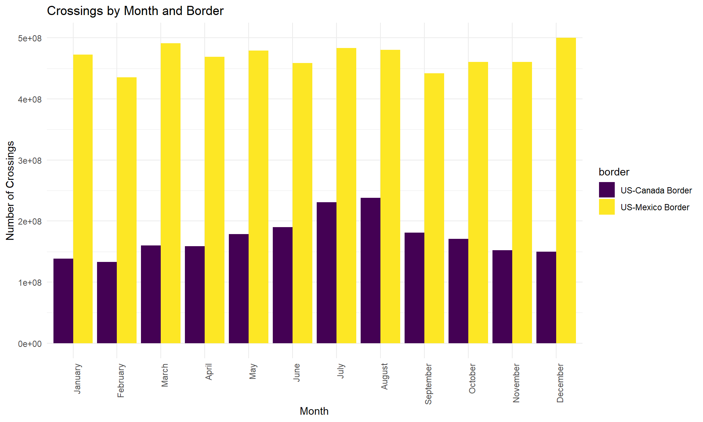
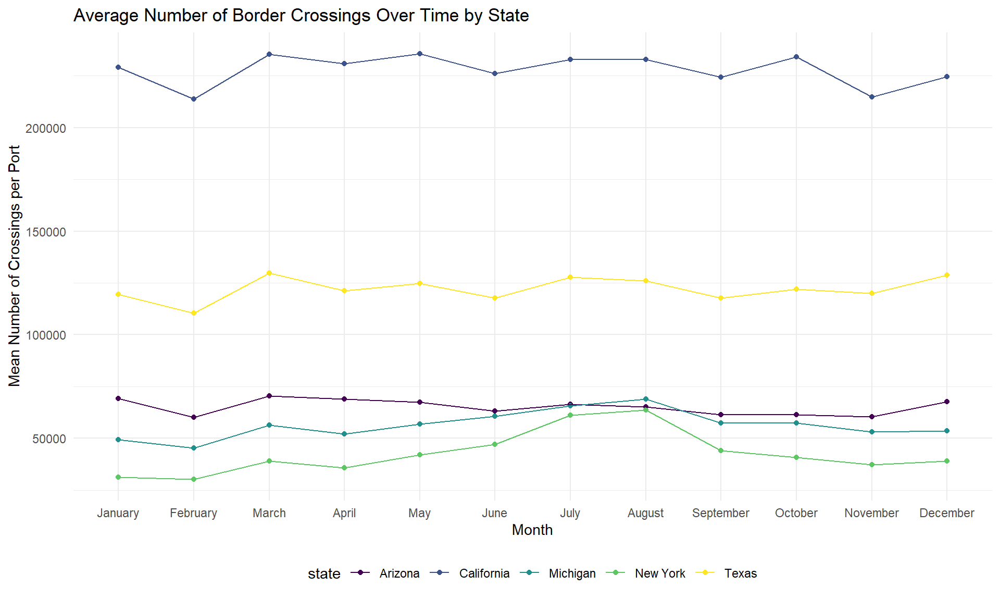

In the table below, we see that the months with the highest number of border crossings are July and August. The lowest number of crossings took place in the winter months (February, in particular).
## Border crossings by month
border_crossing_df %>%
group_by(month) %>%
summarize(n = sum(value)) %>%
knitr::kable()| month | n |
|---|---|
| 1 | 611107875 |
| 2 | 568690871 |
| 3 | 651409308 |
| 4 | 628266842 |
| 5 | 658004778 |
| 6 | 648545701 |
| 7 | 714405951 |
| 8 | 718551827 |
| 9 | 623220080 |
| 10 | 631347754 |
| 11 | 612730589 |
| 12 | 649952890 |
The barplot below shows the order crossings by month for each of the two borders: Canada and Mexico. From the plot, we see that there is a much larger volume in crossings at the US-Mexico border for every month of the year. Additionally, we can observe that US-Mexico border crossings are relatively stable across the months, whereas for the US-Canada border there is an obvious peak in travel during the summer months. This may be due to summer vacations
## Bar plot
border_crossing_df %>%
group_by(month, border) %>%
summarize(n = sum(value)) %>%
ggplot(aes(x = as.factor(month), y = n, fill = border)) +
geom_bar(stat = "identity", position = 'dodge') +
labs(title = "Crossings by Month and Border",
x = "Month",
y = "Number of Crossings")
Below is a plot of 2018 border crossings for the 5 states with the highest number of border crossings. California, Arizona and Texas are on the US-Mexico border, whereas Michigan and New York are on the US-Canada border. Interestingly, we see a jump in border crossings for New York and Michigan during the summer months, which aligns with the trend for US-Canada crossings seen in the previous plot. Travel within the 3 other states on the US-Mexico border is fairly stable over the months as well.
Lastly, California has notably more border crossings than all 4 other states. Texas has the second highest number, which is also notably more than New York, Michigan and Arizona. These two states may be driving the high number of border crossings in the US-Mexico border compared to the US-Canada border.
## Average values over time for top 5 states in 2018
border_crossing_df %>%
filter(state %in% c("Texas", "California", "Arizona", "New York", "Michigan"), year == 2018) %>%
group_by(state, month, year) %>%
summarize(mean_value = mean(value)) %>%
ggplot(aes(x = month , y = mean_value, color = state)) +
geom_point() +
geom_line() +
theme(legend.position = "bottom") +
scale_x_continuous(limits = c(1,12), breaks = c(1:12)) +
labs(title = "Average Number of Border Crossings Over Time by State",
x = "Month",
y = "Number of Crossings")